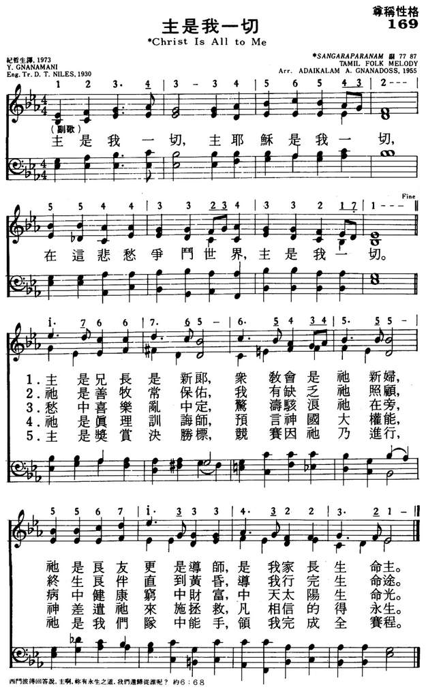

|
|
颂主新歌
169主是我一切 |
|
|
1.主是我一切，主耶稣是我一切， 在这悲愁争斗世界，主是我一切。 主是兄长是新郎，众教会是他新妇， 他是良友更是导师，是我家长生命主。 2.主是我一切，主耶稣是我一切， 在这悲愁争斗世界，主是我一切。 他是善牧常保佑，我有缺乏他照顾， 终身良伴直到黄昏，导我行完全生命途。 3.主是我一切，主耶稣是我一切， 在这悲愁争斗世界，主是我一切 愁中喜乐乱中定，惊涛骇浪他在旁， 病中健康穷中财富，中天太阳生命光。 4.主是我一切，主耶稣是我一切， 在这悲愁争斗世界，主是我一切。 他是真理训诲师，预言神国大权能， 神差遣他来施拯救，凡相信的得永生。 5.主是我一切，主耶稣是我一切， 在这悲愁争斗世界，主是我一切。 主是奖赏决胜标，竞赛因他乃进行， 他是我们队中能手，领我们完成全赛程。 |
|
https://www.mred365.cn/szxg/7172.html

|
|
|
|
|
-

-
LX1312
Christ Is All To Me
169主是我一切
[亞印]
Christ Is All to
Me [Brother He, me brother
calls] (主是我一切)
169
D. T. Niles.
1930
| Text: | Christ Is All to Me |
| Author: | Y. Gnanamani |
| Translator: | D. T. Niles |
| Tune: | [Brother He, me brother calls] |
| Arranger: | Adaikalam A. Gnanadoss |
| Short Name: | Y. Gnanamani |
| Full Name: | Gnanamani, Y. |
Translator: D. T. Niles; Author:
Y. Gnanamani

Tune Information
| Title: | [Brother He, me brother calls] |
| Arranger: | Adaikalam A. Gnanadoss (1955) |
| Incipit: | 17667 65654 34555 |
| Key: | E♭ Major |
| Source: | Tamil (Sangaraparanam); India |
調名:
Tune : SANGARAPARANAM
[Brother
He, me brother calls]
Original Song Written
by : Rev. C. P. Gnanamani
Song Composed & Music Arranged by : James Vasanthan
Mixed & Mastered by : Augustine Ponseelan. R
Singer : Harish Raghavendra & Team
Artists:
Anton Vincent | Angel | Reena | Honeysha | Jonal Jeba |
Kirubai Raja | Christwin | Joel Asir | Rajan | Jesubalan | Vincent .J
Recorded at Good News Productions, Chennai.
Therefore, God exalted him to the highest place and gave him the name that is
above every name, that at the name of Jesus every knee should bow, in heaven and
on earth and under the earth, and every tongue acknowledge that Jesus Christ is
Lord, to the glory of God the Father. Philippians 2:9-11
The Bible teaches us that there is a name above all other names that we know.
Whatever circumstances, trials or tribulations we are facing, they are just
names, which are all under one greater name – Jesus Christ.
So when you are feeling down and out and in need of direction, call upon the
name of Jesus Christ and He shall set you free. For He is the way, the truth and
the life. When we pray in the name of Jesus Christ, according to His will,
heaven will respond.
Song Lyrics
இயேசுவின் நாமமே திருநாமம் – முழு
இருதயத்தால் தொழுவோம் நாமும்
1. காசினியில் அதனுக் கிணையில்லையே – விசு
வாசித்த வர்களுக்குக் குறையில்லையே – இயேசுவின்
2. இத்தரையில் மெத்தவதி சயநாமம் – அதை
நித்தமுந் தொழுபவர்க்கு ஜெய நாமம் – இயேசுவின்
3. பட்சமுடன் ரட்சைசெயு முபகாரி – பெரும்பாவப்பிணிகள் நீக்கும் பரிகாரி – இயேசுவின்
Yaesuvin naamamae thirunaamam muzhu
Irudhayathaal thozhuvoam naamum
1,Kaasiniyil adhanu kinaiyillaiyae
Visuvaasithavargaluku kuraiyillaiyae – Yaesu
2,Iththaraiyil metha adhisayanaamam
Adhai nithamun thozhubavarku jeyanaamam – Yaesu
3,Patchamulla rachai seiyum ubagaari
Perum paava pinigal neekkum parigaari – Yaesu